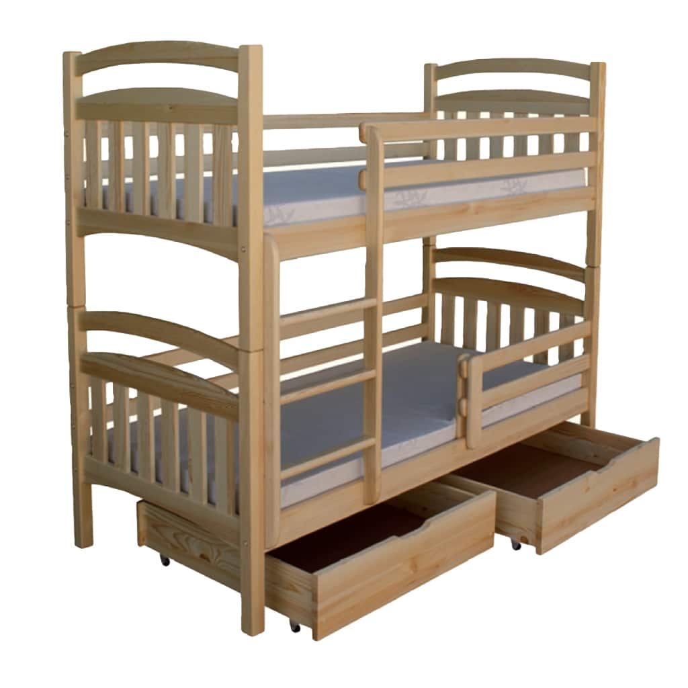

Miegamojo lovos - Lenkijosbaldai24.lt
 Skip to content DIRBAME NUO 1999 m. PRISTATOME BALDUS VISOJE LIETUVOJE Kontaktai Prisijungti / Registruotis Menu +370 656 88181 Kontaktai PRISIJUNGTI 0 €Krepšelyje nėra produktų.
+370 656 88181 0 €Krepšelyje nėra produktų.
Virtuvė Kolekcijos Virtuvės Standart Virtuvės Comfort Virtuvės Modern Virtuvės priedai Valgomojo kolekcijos Virtuvės komplektai Virtuvės stalai Virtuvės mediniai stalai Virtuvės stikliniai stalai Virtuvės kėdės Virtuvės metalinės kėdės Virtuvės medinės kėdės Virtuvės baro kėdės Virtuvės valgomojo kėdės Svetainė Kolekcijos Svetainės sekcijos Svetainės sekcijos Comfort Svetainės sekcijos Premium Svetainės provanso stiliaus baldai Svetainės vitrinos Svetainės komodos Svetainės knygų spintos Svetainės komplektai Svetainės spintos klasikinės Svetainės lentynos Svetainės pakabinamos lentynėlės Svetainės stalai Svetainės išskleidžiami stalai Svetainės kėdės Svetainės kavos staliukai Svetainės TV staliukai Svetainės žurnaliniai staliukai Minkšti baldai Kolekcijos Minkštų baldų komplektai Minkšti kampai Sofos Minkšti odiniai baldai Foteliai Pufai Miegamasis Kolekcijos Miegamojo komplektai Miegamojo provanso stiliaus baldai Miegamojo lovos Miegamojo medinės lovos Miegamojo metalinės lovos Miegamojo dvigulės lovos Miegamojo viengulės lovos Miegamojo lovos Modern Miegamojo minkštasuoliai Miegamojo čiužiniai Miegamojo lovos grotelės Miegamojo spintos klasikinės Miegamojo spintos stumdomom durim Miegamojo pakabinamos spintelės / vitrinos Miegamojo naktinės spintelės Miegamojo tualetiniai staliukai Miegamojo lentynos Prieškambaris Kolekcijos Prieškambario komplektai Prieškambario spintos Prieškambario drabužių kabyklos Prieškambario suoliukai Prieškambario batų dėžės Vonia Kolekcijos Vonios komplektai Vonios praustuvės Vonios spintelės Vonios veidrodžiai Vaikų Kolekcijos Vaikų kambario baldų komplektai Vaikų kambario darbo stalai Vaikų kambario kėdės Vaikų kambario knygų lentynos Vaikų kambario lovos Vaikų kambario dvivietės lovos Vaikų kambario dviaukštės lovos Vaikų kambario trivietės lovos Vaikų kambario spintos Vaikų kambario spintelės Vaikų kambario komodos Vaikų kambario lentynos Biuras Biuro darbo stalai Biuro kėdės Biuro lentynos Biuro pakabinamos lentynėlės Lauko Lauko baldų komplektai Lauko stalai Lauko sofos ir kampai Lauko krėslai Lauko suoliukai Lauko gultai Lauko baldų aksesuarai Išpardavimas Tinka čiužiniui 100x200 (173) 120x200 (275) 140x200 (315) 160x200 (353) 180x200 (290) 200x200 (16) 200x220 (1) 70x200 (1) 80x200 (20) 90x200 (262) PAGAL KAINĄ Pagal pristatymo terminą 1 darbo dienos (4) 10 darbo dienos (70) 15 darbo dienos (1) 2-6 savaitės (533) 7 darbo dienos (1621) 8 savaitės (61)Be abejo, svarbiausias kiekvieno miegamojo taškas yra lova. Ji turi atitikti ne tik pramoginę funkciją, bet ir reprezentatyvią funkciją. Nors formos pasikeitė per metus, pagrindinis vaidmuo nepasikeitė. Šiandien mes dažnai jas pakeičia kampuose su miego funkcijomis , tačiau, jei tai leidžia tik dydis, verta rūpintis miegamuoju su santuokine lova.
Miegamojo lovos istorija
Miegas kaip pagrindas žmonių poreikiams patenkinti mus lydi nuo pat pradžių, todėl miego vieta yra tokia pat seni, kaip ir pasauliui. Miego lovos prototipas neolito laikotarpiu buvo lapai ir žolė. Senovės laikais yra daug dekoruotų Egipto marmurinių lovų. Prieš turėdami šiandienos formą žinomus čiužinius, jie buvo pripildyti medvilnės, plunksnų, šiaudų, žirnių ir kokoso pluoštų. Ludwikowskie ir Viktorijos laikai yra gausiai dekoruoti lova prie miegamojo, kur jie tarnavo kaip atstovas ir buvo galios ženklas.
Miegamojo lovos
Šiandien miegamojo lovos yra labai apgalvotos konstrukcijos, dėl kurios, naudojant specialias medžiagas čiužinys, dangtelis ar lovos rėmas, vaidina svarbų vaidmenį, tarp jų ir antibakterinį, priešgrybinį, antialerginį. Jie yra saugūs sveikatai. Patraukliame pasiūlyme yra miegamojo lovos su laikymo patalynė, LED apšvietimas, reguliuojamos lentynos. Visa tai papildo aukštą funkcionalumą.
Kaip pasirinkti miegamojo lovą?
Miegamojo miegamojo miegamojo pasirinkimas turėtų prasidėti matuojant baldui skirtą vietą . Tai nustato rėmo ir čiužinio dydį. Populiariausias lovos dydis yra 160×200. Pažiūrėkite į likusius miegamojo baldus ir nurodykite jų spalvą ir stilių.
Lova GS132420 120×200
144 € Pasirinkite savybes 124 cm 69 cm 210 cm Pristatymas: 2-6 sav. Visos kolekcijos prekės » GS132420 Greita peržiūraLova GS132419 90×200
137 € Pasirinkite savybes 94 cm 69 cm 210 cm Pristatymas: 2-6 sav. Visos kolekcijos prekės » GS132419 Greita peržiūraLova GS132422 160×200
173 € Pasirinkite savybes 164 cm 69 cm 210 cm Pristatymas: 2-6 sav. Visos kolekcijos prekės » GS132422 Greita peržiūraLova GS132421 140×200
150 € Pasirinkite savybes 144 cm 69 cm 210 cm Pristatymas: 2-6 sav. Visos kolekcijos prekės » GS132421 Greita peržiūraLova GS133649 90×200
136 € Į krepšelį 90 cm 65 cm 205 cm Pristatymas: 2-6 sav. Visos kolekcijos prekės » GS133649 Greita peržiūraLova GS133650 120×200
166 € Į krepšelį 120 cm 65 cm 205 cm Pristatymas: 2-6 sav. Visos kolekcijos prekės » GS133650 Greita peržiūraLova GS133652 160×200
249 € Į krepšelį 160 cm 65 cm 205 cm Pristatymas: 2-6 sav. Visos kolekcijos prekės » GS133652 Greita peržiūraLova GS133651 140×200
167 € Į krepšelį 140 cm 65 cm 205 cm Pristatymas: 2-6 sav. Visos kolekcijos prekės » GS133651 Greita peržiūraLova GS134730 160×200 +
220 € Į krepšelį 171 cm 68 cm 212 cm Pristatymas: 2-6 sav. Visos kolekcijos prekės » GS134730 Greita peržiūraLova GS134731 180×200 +
239 € Į krepšelį 191 cm 68 cm 212 cm Pristatymas: 2-6 sav. Visos kolekcijos prekės » GS134731 Greita peržiūraLova GS134843 su grotelėmis 160×200 +
200 € Į krepšelį 164 cm 100 cm 207 cm Pristatymas: 2-6 sav. Visos kolekcijos prekės » GS134843 Greita peržiūraLova GS136114
311 € Į krepšelį 185 cm 100 cm 221 cm Pristatymas: 2-6 sav. Visos kolekcijos prekės » GS136114 Greita peržiūraLova GS136167 su grotelėmis 140×200
450 € Į krepšelį 145 cm 88 cm 206 cm Pristatymas: 2-6 sav. Tinka čiužiniui: 140x200 Visos kolekcijos prekės » GS136167 Greita peržiūraLova Boss BS19/160
131 € Į krepšelį 178 cm 90 cm 204 cm Greitas pristatymas: 10 d.d. Tinka čiužiniui: 160x200 Visos kolekcijos prekės » GS136186 Greita peržiūraLova Boss BS19/140
126 € Į krepšelį 158 cm 90 cm 204 cm Greitas pristatymas: 10 d.d. Tinka čiužiniui: 140x200 Visos kolekcijos prekės » GS136187 Greita peržiūraLova Boss BS19/90
196 € Į krepšelį 108 cm 90 cm 204 cm Greitas pristatymas: 10 d.d. Tinka čiužiniui: 90x200 Visos kolekcijos prekės » GS136189 Greita peržiūraPatalynės dėžė Boss DS20/140/160
38 € Į krepšelį 151 cm 19 cm 65 cm Greitas pristatymas: 10 d.d. Visos kolekcijos prekės » GS136192 Greita peržiūraLova 180 Irma IM16/180
269 € Į krepšelį 201 cm 101 cm 201 cm Pristatymas: 2-6 sav. Tinka čiužiniui: 180x200 Visos kolekcijos prekės » GS136212 Greita peržiūraLova 160 Irma IM16/160
250 € Į krepšelį 181 cm 101 cm 201 cm Pristatymas: 2-6 sav. Tinka čiužiniui: 160x200 Visos kolekcijos prekės » GS136211 Greita peržiūraLova 140 Irma IM16/140
232 € Į krepšelį 161 cm 101 cm 201 cm Pristatymas: 2-6 sav. Tinka čiužiniui: 140x200 Visos kolekcijos prekės » GS136210 Greita peržiūraLova 40×200 cm Lionel LI 12/140
213 € Į krepšelį 146 cm 94 cm 206 cm Pristatymas: 2-6 sav. Tinka čiužiniui: 140x200 Visos kolekcijos prekės » GS136234 Greita peržiūraLova 90 Tahoe TA24/90
199 € Į krepšelį 97 cm 85 cm 205 cm Greitas pristatymas: 10 d.d. Tinka čiužiniui: 90x200 Visos kolekcijos prekės » GS136288 Greita peržiūraLova 120 Tahoe TA24/120
155 € Į krepšelį 127 cm 85 cm 218 cm Greitas pristatymas: 10 d.d. Tinka čiužiniui: 120x200 Visos kolekcijos prekės » GS136289 Greita peržiūraLova 180 Tahoe TA24/180
177 € Į krepšelį 187 cm 85 cm 218 cm Greitas pristatymas: 10 d.d. Tinka čiužiniui: 180x200 Visos kolekcijos prekės » GS136292 Greita peržiūraLova 160 Tahoe TA24/160
169 € Į krepšelį 167 cm 87 cm 218 cm Greitas pristatymas: 10 d.d. Tinka čiužiniui: 160x200 Visos kolekcijos prekės » GS136291 Greita peržiūraLova GS136290 TA24/140
162 € Į krepšelį 147 cm 85 cm 218 cm Greitas pristatymas: 10 d.d. Tinka čiužiniui: 140x200 Visos kolekcijos prekės » GS136290 Greita peržiūraLova 160×200 Kora KLS +
218 € Į krepšelį 171 cm 68 cm 212 cm Pristatymas: 2-6 sav. Tinka čiužiniui: 160x200 Visos kolekcijos prekės » GS136989 Greita peržiūraLova 160 be Limon
515 € Į krepšelį 169 cm 90 cm 215 cm Pristatymas: 8 sav. Tinka čiužiniui: 160x200 Visos kolekcijos prekės » GS137346 Greita peržiūraLova 160 su dėžė patalynei Limon
637 € Į krepšelį 169 cm 90 cm 215 cm Pristatymas: 8 sav. Tinka čiužiniui: 160x200 Visos kolekcijos prekės » GS137347 Greita peržiūraLova 180 su dėžė patalynei Limon
682 € Į krepšelį 189 cm 90 cm 215 cm Pristatymas: 8 sav. Tinka čiužiniui: 180x200 Visos kolekcijos prekės » GS137349 Greita peržiūraLova 180 be Limon
558 € Į krepšelį 189 cm 90 cm 215 cm Pristatymas: 8 sav. Tinka čiužiniui: 180x200 Visos kolekcijos prekės » GS137348 Greita peržiūraLova Provance Ł160
512 € Į krepšelį 201 cm 100 cm 210 cm Pristatymas: 8 sav. Tinka čiužiniui: 160x200 Visos kolekcijos prekės » GS137425 Greita peržiūraLova Provance Ł180
531 € Į krepšelį 201 cm 200 cm 210 cm Pristatymas: 8 sav. Tinka čiužiniui: 180x200 Visos kolekcijos prekės » GS137426 Greita peržiūraLova Provance
498 € Į krepšelį 161 cm 100 cm 210 cm Pristatymas: 8 sav. Tinka čiužiniui: 140x200 Visos kolekcijos prekės » GS137442 Greita peržiūraLova Romantica 180
531 € Į krepšelį 201 cm 100 cm 210 cm Pristatymas: 8 sav. Tinka čiužiniui: 180x200 Visos kolekcijos prekės » GS137473 Greita peržiūraLova Romantica 160
512 € Į krepšelį 201 cm 100 cm 210 cm Pristatymas: 8 sav. Tinka čiužiniui: 160x200 Visos kolekcijos prekės » GS137472 Greita peržiūraLova Romantica 140
498 € Į krepšelį 161 cm 100 cm 210 cm Pristatymas: 8 sav. Tinka čiužiniui: 140x200 Visos kolekcijos prekės » GS137471 Greita peržiūraLova 140 be Selens SE.1104
475 € Į krepšelį 156 cm 90 cm 207 cm Pristatymas: 8 sav. Tinka čiužiniui: 140x200 Visos kolekcijos prekės » GS137508 Greita peržiūraLova 160 su dėžė patalynei Selens SE.1102
639 € Į krepšelį 176 cm 90 cm 207 cm Pristatymas: 8 sav. Tinka čiužiniui: 160x200 Visos kolekcijos prekės » GS137511 Greita peržiūraLova 160 be Selens SE.1100
487 € Į krepšelį 176 cm 90 cm 207 cm Pristatymas: 8 sav. Tinka čiužiniui: 160x200 Visos kolekcijos prekės » GS137510 Greita peržiūraLova 180 su dėžė patalynei Selens SE.1103
657 € Į krepšelį 196 cm 90 cm 207 cm Pristatymas: 8 sav. Tinka čiužiniui: 180x200 Visos kolekcijos prekės » GS137513 Greita peržiūraLova 180 be Selens SE.1101
542 € Į krepšelį 196 cm 90 cm 207 cm Pristatymas: 8 sav. Tinka čiužiniui: 180x200 Visos kolekcijos prekės » GS137512 Greita peržiūraLova Planet PL14 +
241 € Į krepšelį 94 cm 77 cm 224 cm Pristatymas: 2-6 sav. Tinka čiužiniui: 90x200 GS138264 Greita peržiūraLova
214 € Į krepšelį 229 cm 75 cm 94 cm Pristatymas: 2-6 sav. Tinka čiužiniui: 90x200 GS138279 Greita peržiūraMiegamojo komplektas Viki
603 € Į krepšelį Pristatymas: 2-6 sav. Tinka čiužiniui: 160x200 GS138542 Greita peržiūraLova Viki VIK-10
144 € Į krepšelį 207 cm 76 cm 166 cm Pristatymas: 2-6 sav. Tinka čiužiniui: 160x200 GS138545 Greita peržiūraLova 180 Irma IM16/180S.P
488 € Į krepšelį 201 cm 101 cm 201 cm Pristatymas: 2-6 sav. Tinka čiužiniui: 140x200 Visos kolekcijos prekės » GS143577 Greita peržiūraLova 160 Irma IM16/160S.P
460 € Į krepšelį 181 cm 101 cm 201 cm Pristatymas: 2-6 sav. Tinka čiužiniui: 140x200 Visos kolekcijos prekės » GS143576 Greita peržiūraLova 140 Irma IM16/140S.P
433 € Į krepšelį 161 cm 101 cm 201 cm Pristatymas: 2-6 sav. Tinka čiužiniui: 140x200 Visos kolekcijos prekės » GS143575 Greita peržiūraLova GS101104
254 € Pasirinkite savybes 98 cm 77 cm 212 cm Pristatymas: 2-6 sav. Visos kolekcijos prekės » GS101104 Greita peržiūraLova GS110182 200×160
223 € Į krepšelį 172 cm 90 cm 212 cm Pristatymas: 2-6 sav. Visos kolekcijos prekės » GS110182 Greita peržiūraLova GS110184 200×180
250 € Į krepšelį 192 cm 90 cm 212 cm Pristatymas: 2-6 sav. Visos kolekcijos prekės » GS110184 Greita peržiūraLova GS110433 160×200
320 € Į krepšelį 166 cm 94 cm 206 cm Pristatymas: 2-6 sav. Visos kolekcijos prekės » GS110433 Greita peržiūraLova GS110434 180×200
331 € Į krepšelį 186 cm 94 cm 206 cm Pristatymas: 2-6 sav. Visos kolekcijos prekės » GS110434 Greita peržiūraLova GS110553 180×200 +
191 € Pasirinkite savybes 189 cm 100 cm 200 cm Pristatymas: 2-6 sav. Visos kolekcijos prekės » GS110553 Greita peržiūraLova GS110552 160×200 +
163 € Pasirinkite savybes 169 cm 100 cm 205 cm Pristatymas: 2-6 sav. Visos kolekcijos prekės » GS110552 Greita peržiūraLova GS110581 160×200
357 € Pasirinkite savybes 179 cm 98 cm 235 cm Pristatymas: 2-6 sav. Visos kolekcijos prekės » GS110581 Greita peržiūraLova GS110797 160×200 +
178 € Į krepšelį 171 cm 74 cm 212 cm Pristatymas: 2-6 sav. Visos kolekcijos prekės » GS110797 Greita peržiūraLova GS113056 160×200+
163 € Į krepšelį 165 cm 102 cm 205 cm Pristatymas: 2-6 sav. Visos kolekcijos prekės » GS113056 Greita peržiūraLova GS113055 160×200 + 2 spintelės+
245 € Į krepšelį 205 cm 102 cm 260 cm Pristatymas: 2-6 sav. Visos kolekcijos prekės » GS113055 1 2 3 4 … 38 39 40 Mano sąskaita Registruotis Mano paskyra Prekių krepšelis D.U.K. / Pagalba Informacija Kontaktai Apie mus Prekių grąžinimas Baldų montavimo paslauga Privatumo politika Katalogas svetainės baldai Virtuvės baldų spalvos Pirkimas Pristatymas Kaip pirkti išsimokėtinai? Apmokėjimo būdai Paslaugų tiekimo sąlygos Kaip pirkti? Kontaktai Telefonas: +370 656 88181 susisiekti - (darbo dienomis 9-18 val.)El. paštas: info@lenkijosbaldai24.lt
Elektrėnų g. 7 , Kaunas
Mūsų facebook puslapis čia » Copyright 2020 © Kopijuoti be UAB''KETORA'' sutikimo draudžiama Prisijungti Virtuvė Kolekcijos Virtuvės Standart Virtuvės Comfort Virtuvės Modern Virtuvės priedai Valgomojo kolekcijos